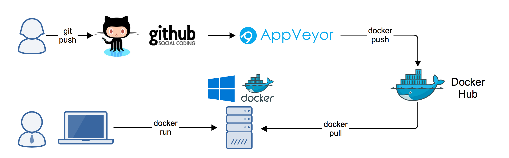
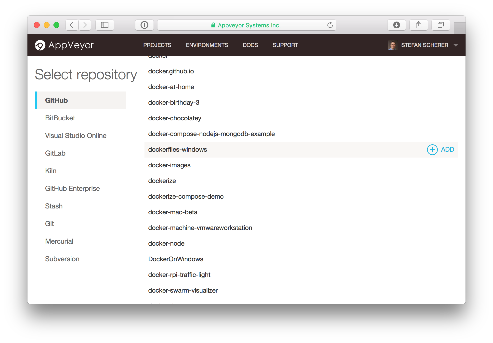
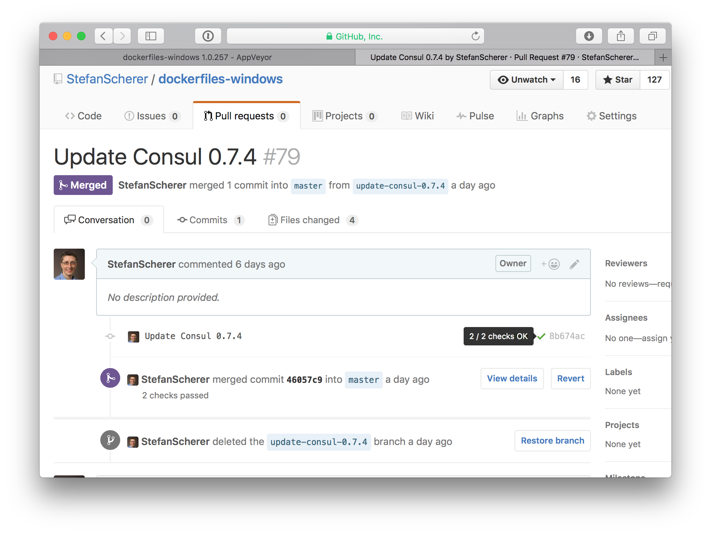
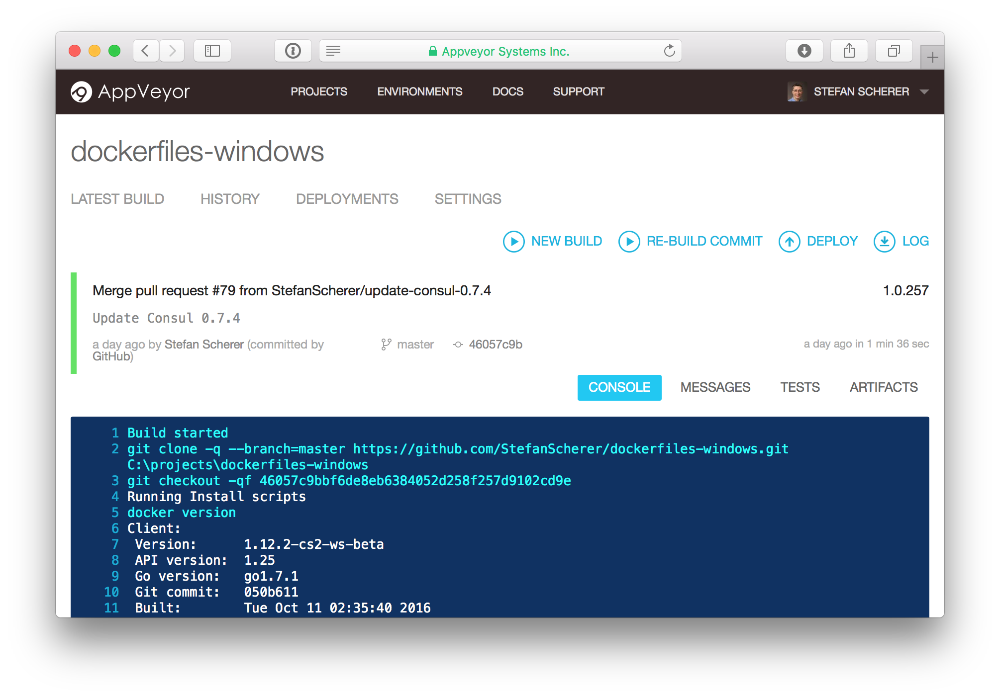
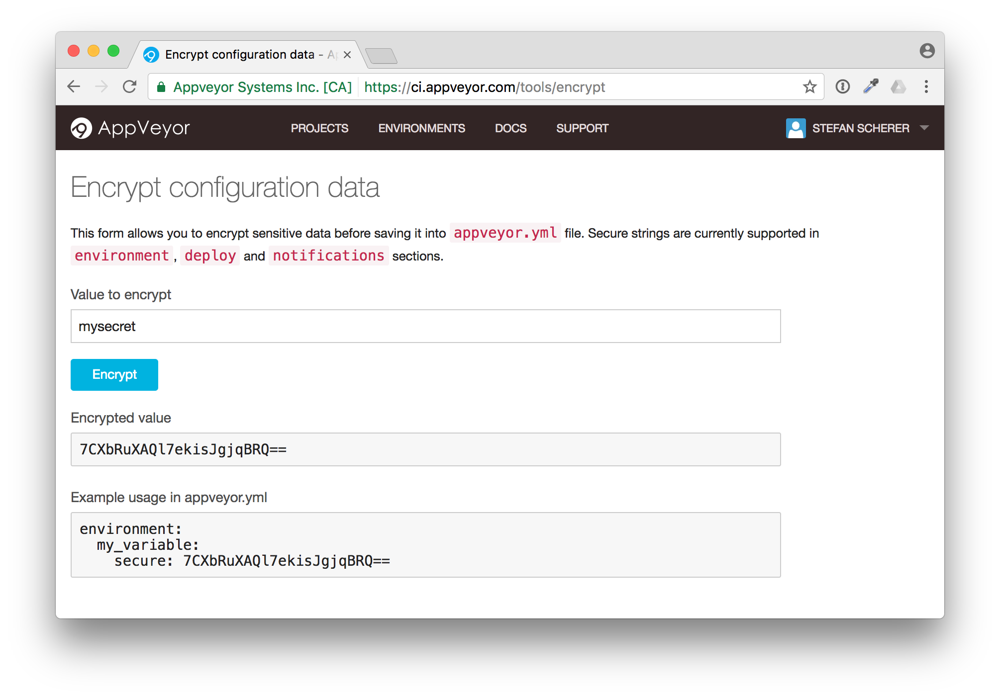

I love GitHub and all the services around it. It enables you to work from anywhere or any device and still have your complete CI pipeline in your pocket. Every thing is done with a git push. You can add services like Codeship, Travis, Circle and lots of others to build and test your code and even the pull requests you get from others.
{kind=link}
But I'm on Windows
To build applications for Windows there is a similar cloud based CI service, called AppVeyor.
And it works pretty similar to the other well known services for Linux:
- Put a YAML file into your repo with the build, test and deploy steps
- Connect your repo to the cloud CI service
- From now on a
git pushwill do a lot for you.
Your CI pipeline is set up in a few clicks.
appveyor.yml
Here is an example how such a YAML file looks like for AppVeyor. This is from a small C/C++ project I made long time ago during holiday without Visual Studio at hand. I just created that GitHub repo, added the appveyor.yml and voila - I got a compiled and statically linked Windows binary at GitHub releases.
version: 1.0.{build}
configuration: Release
platform: x64
build:
project: myfavoriteproject.sln
verbosity: minimal
test: off
artifacts:
- path: x64/Release/myfavoriteproject.exe
name: Release
deploy:
- provider: GitHub
auth_token:
secure: xxxxx
The build worker in AppVeyor is fully armed with lots of development tools, so you can build projects for serveral languages like Node.js, .NET, Ruby, Python, Java ...
Docker build
AppVeyor now has released a new build worker with Windows Server 2016 and Docker Enterprise Edition 17.03.0-ee-1 pre-installed. That instantly enables you to build, test and publish Windows Docker images in the same lightweight way.

All you have to do is to select the new build worker by adding image: Visual Studio 2017 to your appveyor.yml. No more work to do to get a fully Windows Docker engine for your build.
The following appveyor.yml gives you an idea how easy an automated Docker build for Windows can be:
version: 1.0.{build}
image: Visual Studio 2017
environment:
DOCKER_USER:
secure: xxxxxxx
DOCKER_PASS:
secure: yyyyyyy
install:
- docker version
build_script:
- docker build -t me/myfavoriteapp .
test_script:
- docker run me/myfavoriteapp
deploy_script:
- docker login -u="$env:DOCKER_USER" -p="$env:DOCKER_PASS"
- docker push me/myfavoriteapp
This is a very simple example. For the tests you can think of some more sophisticated tests like using Pester, Serverspec or Cucumber. For the deploy steps you can decide when to run these, eg. only for a tagged build to push a new release.
Docker Compose
You are not limited to build a single Docker image and run one container. Your build agent is a full Windows Docker host, so you also can install Docker Compose and spin up a multi-container application. The nice thing about AppVeyor is that the builders also have Chocolatey preinstalled. So you only have to add a short single command to your appveyor.yml to download and install Docker Compose.
choco install docker-compose
Docker Swarm
You also might turn the Docker engine into a single node Docker swarm manager to work with the new commands docker stack deploy. You can create a Docker Swarm with this command
docker swarm init
Add project to build
Adding AppVeyor to one of your GitHub repos is very simple. Sign in to AppVeyor with your GitHub account and select your project to add.

Now you can also check the pull requests you or others create on GitHub.

You can click on the green checkmark to view the console output of the build.

Tell me a secret
To push to the Docker Hub we need to configure some secrets in AppVeyor. After you are logged in to AppVeyor you can select the "Encrypt data" menu item from the drop down menu or use the link https://ci.appveyor.com/tools/encrypt
There you can enter your cleartext secret and it creates the encrypted configuration data you can use in your appveyor.yml.

These secret variables don't get injected in pull request builds, so nobody can fork your repo and send you an ls env: pull request to expose that variables in the output.
Immutable builds
One of the biggest advantages over self-hosting a CI pipeline is that you get immutable builds. You just do not have to care about the dirt and dust your build left on the build worker. AppVeyor - like all other cloud based CI systems - just throws away the build worker and you get another empty one for the next build.
Even if you build Windows Docker images you don't have to cleanup your Docker host. You can concentrate on your code, the build and your tests, and forget about maintain your CI workers.
Examples
I have some GitHub repos that already use AppVeyor to build Windows Docker images, so you can have a look how my setup works:
Conclusion
AppVeyor is my #1 when it comes to automated Windows builds. With the Docker support built-in it becomes even more interesting.
As always, please leave a comment if you have questions or improvements or want to share your thoughts. You can follow me on Twitter @stefscherer.